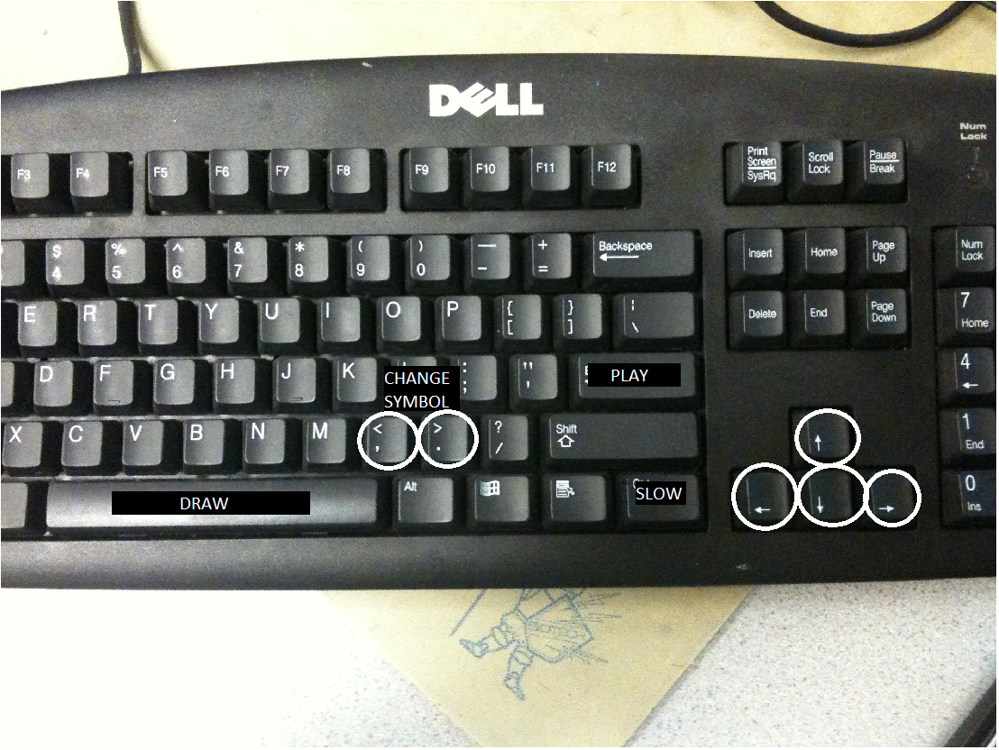
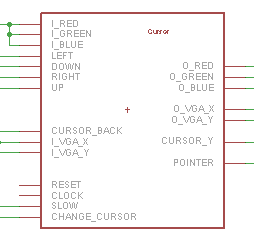
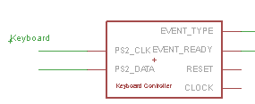
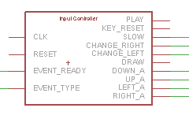
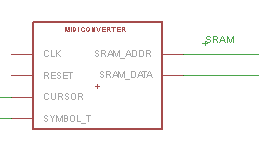
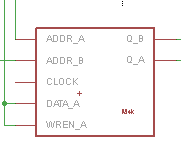
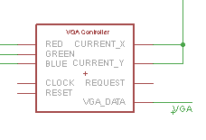
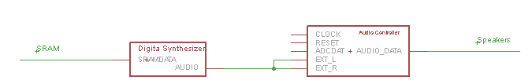

Introduction
For this Project I developed a Visual Music Composer and player on an Altera DE2 FPGA board. In order to create a fluid user interface some peripherals had to be interfaced with the board, like a Keyboard, VGA display and speakers. With this peripherals the system is able to play music composed by the user and convert it to a Midi file that is stored in the SRAM on the board.
High Level Design
This project was divided into 3 sections:
- Input Management - Keyboard and Switches
- VGA Control - Graphic presentation
- Music Reader and Converter
Input Management
The Keybard is the main access that the user has to the interface it allows the user to control the cursor with the arrows, slow the cursor down for percision, draw any type of music symbol and finally play the music composed.

VGA Control
The VGA is set up with a preloaded picture shown below. This is the template for the user to play with. To compose music all that is necessary is to lay the symbols on the staff and it will automaticaly be converted to a MIDI-Event and stored.

To lay the objects there is a very intuitive cursor that changes into the form of the symbol to be droped.
Music Reader and Converter
After the user composes the music, the systems stores the result in a MIDI file in SRAM. Hitting enter will make the system play the file previously stored. A movie of the system playing a song is the result section.
Hardware Design
This image demonstrates how the diferent modules in the system comunicate. Download the project here
{kind=link}
- Cursor.v
- Keyboard_Controller.v
- Input_Controller.v
- MidiConverter.v
- M4kmem.v (VGA Memory)
- VGAController.v
- Audio_controller.v
Cursor.v
This module is resposible for displaying the correct cursor. The cursor is not stored in memory like the rest of the image, instead it is computed every frame. This means that some custom manipulation on the address bus of the VGA controller had to be done. This means that instead of mapping the entire screen, whenever the VGA request the pixels that lay on top of the cursor, this module redirects the address to a different location, corresponding to the selected pointer. This way it is possible to have multiple pointers without storing the value. This is important because on this board M4k block are a scarse resource.
Furthermore this module also computes the color. This is necessary because there are only enough M4k blocks to store a 640x480 image in black and white. As a result of this the system has 3 basic colors: red that corresponds to the user interface, green is associated with the cursor and blue is the background.
The image shows several I/O's of this module: iR, iG, iB, oR, oG, oB are there to ensure that the modules has access to the color bits, this way the module can change the color of the cursor as well as any other pixel on the screen.iLeft, iRight, iUp and iDown are the outputs from the keyboard_controller. When any of these bits are set the module knows that it needs to change the direction of the cursor. In order to create the pointer Cursor.v has to be able to manipulate the VGA request address. This means that iVGA_X, iVGA_Y, oVGA_X and oVGA_Y are that to make this possible. By changing the oVGA_? value when to a diferente place when the VGA request the pixels around the cursor, it is possible to have multiple instantiations of the same object in memory. The slow bit warns the module when the user wants to be more precise with the cursor, on this case the cursor movement instead of jumping several pixels at a time it only jumps one. iCursorB has the information of the image behind the cursor. This is necessary for the cursor to have a transparent color, this means that when the background is set HIGH the cursor lays behind. ichangeC is an input that tells the Cursor.v to change the template for the pointer. Finally there are two outputs called oCY and cur_pointer_x. oCY stores the current Y coordinate of the cursor and cur_pointer_x gives the x coordinate for the template being used not the x cursor coordinate. This last output is necessary so that the remaining modules know wich symbol is being manipulated.
Keyboard_Controller.v
This modules processes the information coming from the Keyboard. It was based on the code from anotther ECE 5760 Final Project - Sand Game by Skyler Scheinder. Some changes were made to accomodate the characteristics of this project.
PS2_CLK is the serial clock for the PS2 communication for the keyboard.
PS2_DATA is the serial data coming from the keyboard to the FPGA board.
This module converts the serial data into a series of events (EVENT_TYPE). Each event corresponds to a key being pressed or released.
Input_Controller.v
Input_controller is the modules which interpretes the Events coming from the Keyboard_controller. This module converts the events into single lines that can be run to the appropriate modules. The module also takes care of the debounce key problem. This means that if the user maintains the key pressed down, it wil be interpreted correctly and not like several key pressed. This allows for a smooth movement of the cursor when the user maintains the arrows pressed down.
When EVENT_READY is set the module activates the appropriate line.
PLAY: Is set HIGH when the Enter key is pressed. It is then routed to the music player.
KEY_RESET: Is set HIGH when the ESC key is pressed, it is then routed to all modules reset lines (This is not represented in the main block diagram).
SLOW: Is set HIGH when the right CTRL key is pressed; this allows the user to slow the cursor down in order to have more accuracy when dropping the symbol into the staff.
CHANGE_RIGHT: Is set HIGH when the '>' key is pressed; this allows the user to change cursor into the symbol located to the right of the current one.
CHANGE_LEFT: Is set HIGH when the '<' key is pressed; this allows the user to change cursor into the symbol located to the left of the current one.
DRAW: Is set HIGH when the Space bar is pressed; this allows the user to draw the symbol into the staff, saving the information into SRAM as a MIDI event. This line is routed to the SRAM wren, as well as to the M4k multiplexer. This multiplexer allows the memory to be rewritten into memory with the addition of the cursor. This means that when the space bar is pressed the entire image is redrawn to memory with the addition of the cursor.
DOWN_A, UP_A, LEFT_A, RIGHT_A: Are set HIGH when the user presses and holds any arrow key.
All signals concerning the cursor are routed to the Cursos module.
MidiConverter.v
This module takes the information coming from the Cursor and converts all data into a MIDI type event. The information necessary to store an event in this format is the note being played and the timing of that note. This information can be deduced by the coordinates of the cursor relative to the staff and by the type of cursor that is being used. The event is only stored when the DRAW signal is set HIGH.
CURSOR: Is the input that tells the module what coordinates the cursor is at the moment. This allows the module to compute the note that is being stored.
SYMBOL_T: Is the input that tells the module what type of cursor is being drawn. This allows the module to compute the timing of the note being stored.
M4kmem.v - VGA Memory
This is a Altera Megawizard module. This is a 2-Port RAM memory, stored in M4k blocks.M4k blocks allow for a faster access to memory as well as a dual read and write. However there is limited amount of this kind of memory and this was a limiting factor in this design. There is only enough memory to draw a binary image in a 640x480 screen resolution. This means that the color had to be computed in real time.
In this block the Q_B is looped to DATA_A, this allows for the memory to be rewritten, but this only happens the user wants to draw. This was implemented so that the cursor could be redrawn into memory. The same processed used to draw the cursor from a different part of the screen was used to write it to memory. what this means is that when the addr_b reaches the cursor value, it imediatly changes into the address of the sprite to be copied, hence memory is being read from one place and writen in another is the same block of memory, almost simultaneously. This would never be possible without M4k blocks..
VGAController.v
This module was taken out of the terasic website, and it remained unaltered. It allowed me to output the RGB colors when requested and it took care of the VGA timings. Thanks you terasic.
Audio_Controller.v

The Digital Synthesizer was written in the main module due to its simplicity. It produces a sawthooth wave with the frequency associated with the note to be played. This was accomplished by a simple phase accumulator and a delay accumulator. It takes the information out of the SRAM one 16 word at a time.
The Audio Controller was taken out of a previous project from ECE 5760 webpage. This module was coded by Professor Bruce Land.
Code Curiosities
1 - There were some difficulties along the project's life. It started out as a music sheet visual recognizer and midi converter. For the first few weeks I was occupied trying to develop a visual system that could implement a Hough Transform on a binary image of a music sheet. This Hough Transform space should then allow me to identify the circle areas on the sheet as well as the lines. This information would then be processed into a Midi File like the one in the final project. I was able to create the system to transform the image into Hough Space but it was only then when I realised that Hough transform is not a good technique for template matching when faced with noisy images. Even after a few attempts of pre and post processing the image, it still would give good results. Finally I decided to go in another direction and ended up here.
2 - In order to draw the initial image onto the display I developed a matlab code that converts black and white BMP images into mif files to be loaded onto the DE2 board. I feel that this is a good tool for other projects as well, so you can download it here.
To use this file simply open MATLAB, double click on the image inside MATLAB and it will create a variable with the image parameters. Run the code, and a 'img.mif' file will appear.
Results
After a few days without sleep...
ion of this system a wider range of symbols could be used to compose better music. Also in this project there were no half tones, meening that the user could not draw a sharp or flat note. Further more there was only the possibility to play with a G key. F and C could be easily implemented.These limitation mainly occured due to the lack of time. Finally, the use of the new DE2-115 board would have been a game changer. In that board there would be enough memory space for an even better user interface were probably a USB mouse could also be interfaced.
Thanks
I want to thank Professor Bruce Land for intructing the course and Darbin (TA) for helping me in the development of this project.